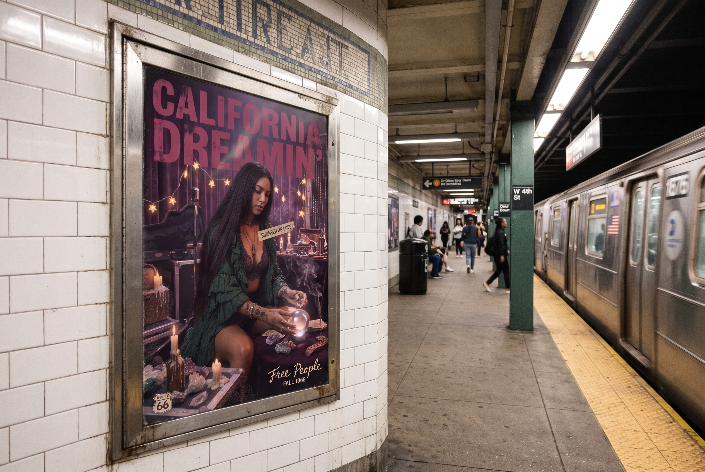
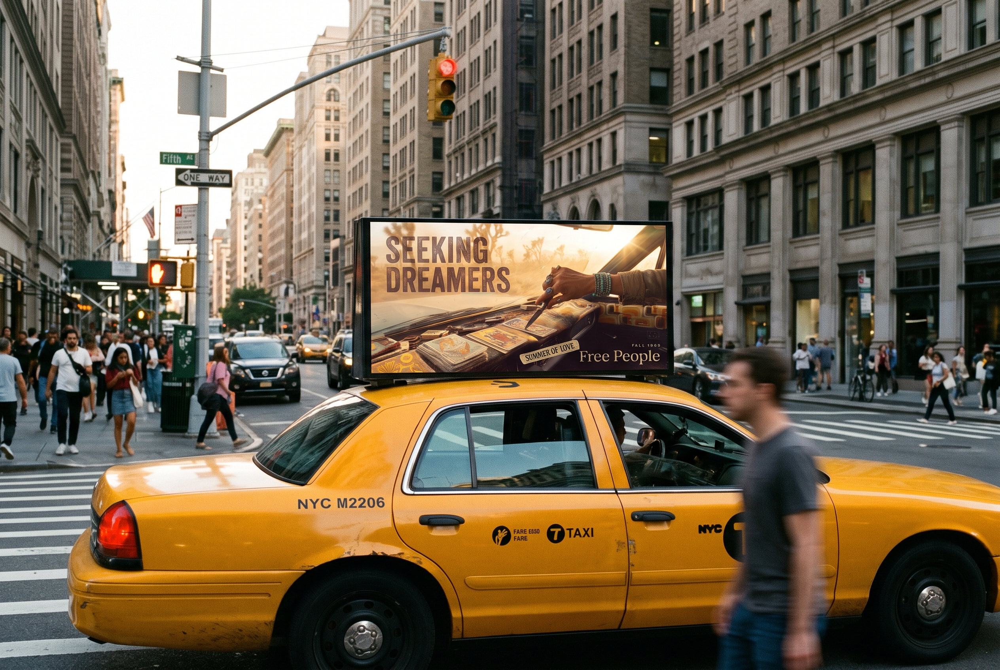
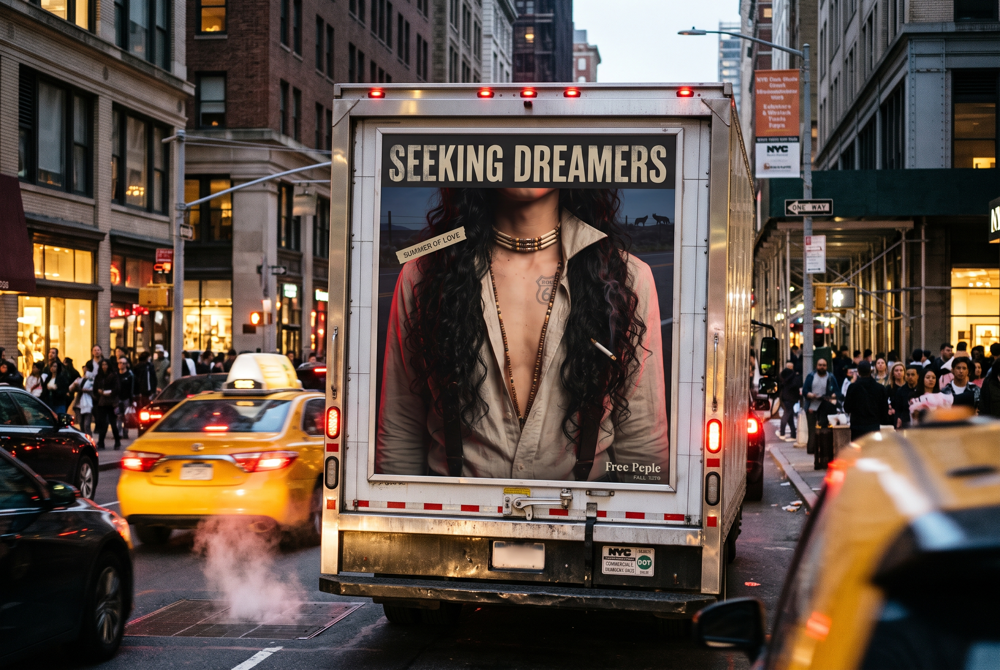

Digital OOH • Spectacular

Environmental print and digital out-of-home campaign placements across New York City—pairing 1970s desert noir photography with guerrilla wheatpaste, transit, and Times Square spectacular formats.



